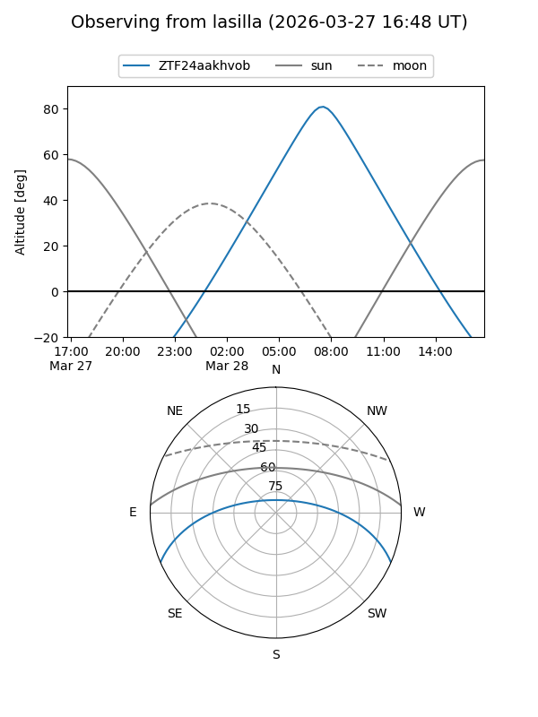
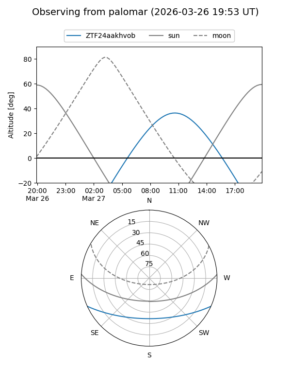

ZTF24aakhvob
Target ZTF24aakhvob at 2026-03-27 10:08
Aliases and brokers:
FINK: link
Lasair: link
ALeRCE: link
alt names
ZTF24aakhvob (ztf,fink_ztf)
Coordinates:
equatorial (ra, dec) = 226.9072,-20.12450
equatorial (HMS+DMS) = 15:07:37.72,-20:07:28.20
galactic (l, b) = (341.4293,+32.37859)
Flags:
Photometry:
last ztfg=17.01
1 ztfg detections
Lightcurve
Visibility


Additional plots